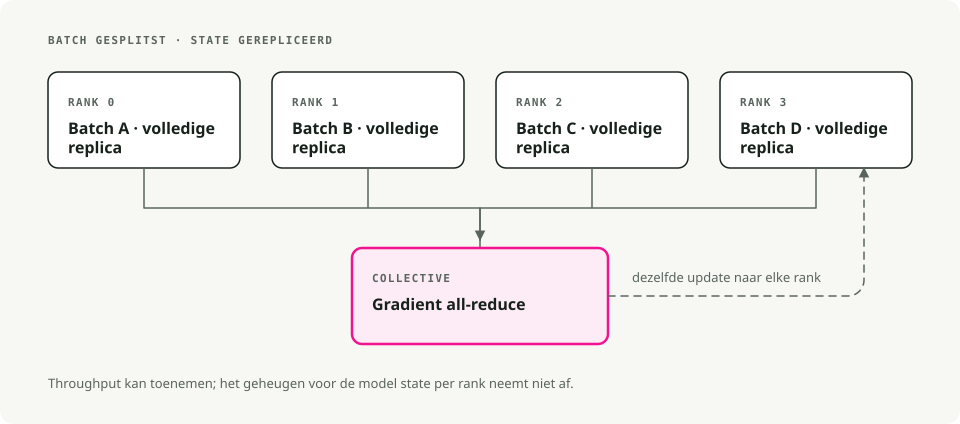
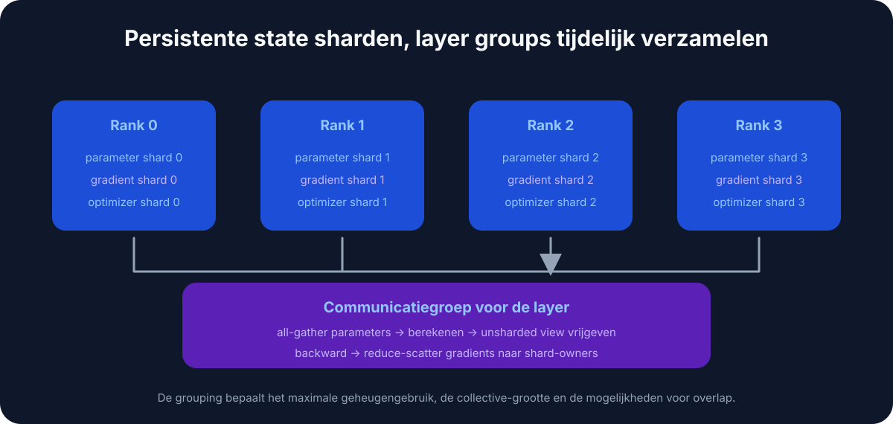
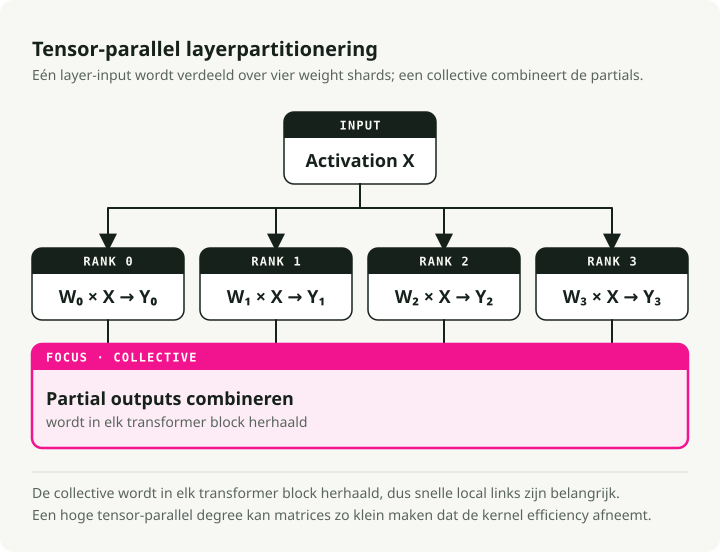
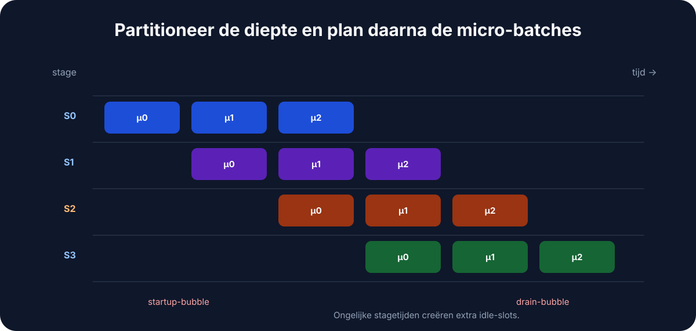
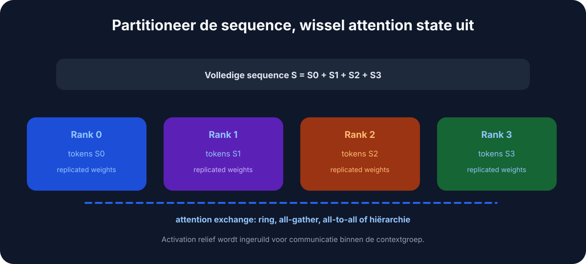
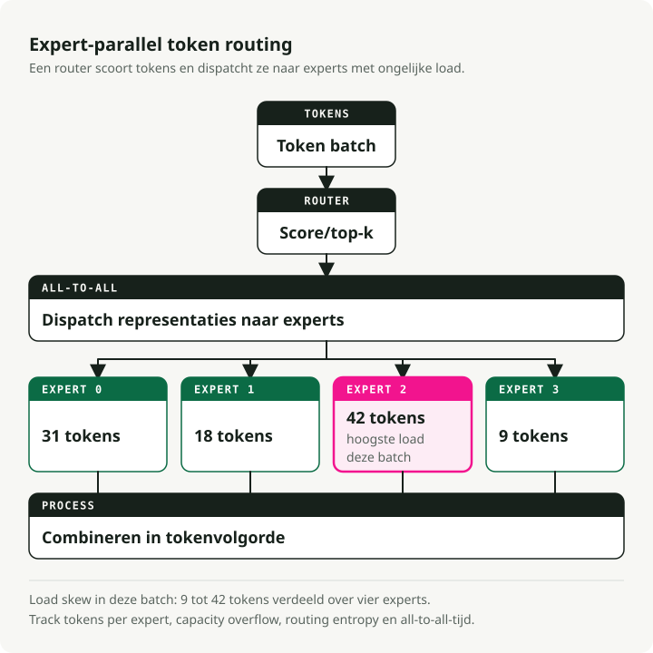
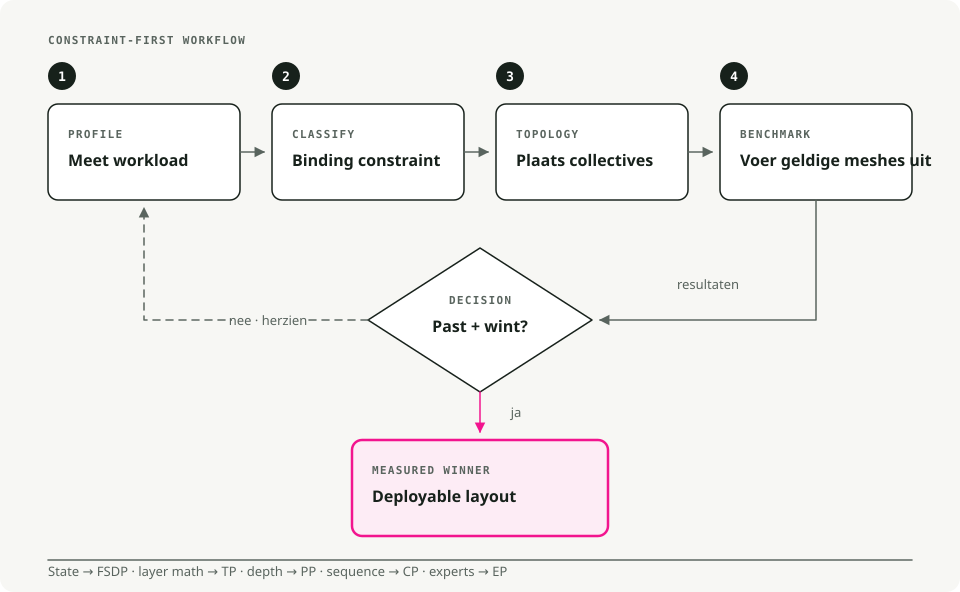

Automatische vertaling
Dit artikel is automatisch vertaald vanuit de oorspronkelijke Engelse versie.
Grote taalmodellen schalen: multi-GPU- en multi-node-strategieën die in de praktijk standhouden
De LLM's van vandaag passen niet op één enkele GPU. Een model met 70B parameters heeft alleen al ongeveer 140GB nodig voor gewichten in FP16, bijna twee keer zoveel als op een A100 past. Deze modellen trainen of serveren betekent het werk verdelen over meerdere GPU's, en een verkeerde verdeling verspilt het grootste deel van je compute-budget.
Dit is een praktische walkthrough van de parallelism-strategieën die echt werken in productie, gebaseerd op Hugging Face's Ultra-Scale Playbook.
Vereisten
Je haalt hier het meeste uit als je al vertrouwd bent met:
- Backpropagation, gradiënten en optimizers zoals AdamW.
- Transformer-mechanica: attention en feed-forward-netwerken.
- PyTorch-basics:
nn.Module,DataLoader, de standaard trainingslus.
Waarom schalen belangrijk is
Vier dingen duwen je weg van één enkele GPU. Een 70B-model heeft ruwweg 140GB nodig in FP16, bijna het dubbele van de 80GB van een A100. Zelfs op acht A100's duurt een from-scratch-run van 13B weken. Lange contexten (32K tokens en hoger) gaan al voorbij het geheugen van één GPU voordat je echt werk hebt gedaan. En bij productieload is distributed inference wat voorkomt dat je tail latency uit de hand loopt.
1. Parallelism-technieken, eenvoudig uitgelegd
1.1 Data parallelism (DP)
De simpelste opsplitsing. Elke GPU houdt het volledige model vast en verwerkt een ander deel van de batch. Na backprop voeren de GPU's een all-reduce uit op hun gradiënten (gemiddelde), waarna elke GPU zijn eigen kopie update. Identieke modellen, verschillende data, gesynchroniseerde gewichten.
Gebruik dit wanneer het model comfortabel op één GPU past en je simpelweg meer batches per seconde wilt verwerken. De setup-kosten zijn bijna nul; DDP in PyTorch is een wrapper van één regel. De beperking is geheugen: elke GPU houdt nog steeds het volledige model, optimizer states en gradiënten vast, dus je koopt throughput, geen capaciteit.

Tools: PyTorch DDP, Horovod.
1.2 Fully sharded data parallelism (FSDP)
DP, maar dan geheugenbewust. Parameters, gradiënten en optimizer states worden geshard over GPU's. Tijdens de forward pass verzamelt elke GPU de parameters die hij nodig heeft van de andere GPU's, rekent daarmee, en laat vervolgens de geleende shards weer los om geheugen vrij te maken. De backward pass herhaalt de gather en reduceert daarna de gradiënten zodat elke GPU alleen zijn eigen shard bijwerkt.
Dit is de laag waar je naar grijpt zodra het model te groot is geworden voor één GPU (meestal alles boven ~10B parameters) en je op één machine wilt blijven trainen zonder je code te herschrijven. In de praktijk laat FSDP je modellen trainen die 4–8× groter zijn dan wat op één GPU past.

[!NOTE] ZeRO-stages, kort uitgelegd FSDP wordt vaak beschreven in termen van ZeRO (Zero Redundancy Optimizer):
- Stage 1: shard alleen optimizer states (~4× geheugenwinst).
- Stage 2: shard gradiënten + optimizer states (~8× geheugenwinst).
- Stage 3: shard parameters + gradiënten + optimizer states (lineaire schaal met N GPU's).
PyTorch FSDP gebruikt standaard gedrag van Stage 3.
FSDP inschakelen in PyTorch
from torch.distributed.fsdp import FullyShardedDataParallel as FSDP
# 1. Wrap your model
model = MyLLM()
model = FSDP(model)
# 2. Train as usual
output = model(input)
loss = output.sum()
loss.backward()
optimizer.step()
Tools: PyTorch FSDP, DeepSpeed ZeRO-3.
1.3 Tensor parallelism (TP)
Splits individuele lagen over GPU's. Neem een gewichtsmatrix, hak die in stukken kolomsgewijs (of rijgewijs), en geef elke GPU een stuk. Elk device berekent zijn deel van de output; een all-reduce of concatenatie voegt de resultaten weer samen vóór de volgende laag. Dit gebeurt bij elke laag.
TP is zinvol wanneer individuele lagen te groot zijn, zelfs na FSDP — enorme attention-matrices of brede FFN's. Het veronderstelt ook een snelle intra-node-interconnect: NVLink of NVSwitch, niet PCIe. Over nodes heen wordt de all-reduce per laag de bottleneck en verdwijnt de winst. Een TP-graad van 2–8 binnen één machine is meestal de sweet spot.

Tools: Megatron-LM, TensorRT-LLM, ColossalAI.
1.4 Pipeline parallelism (PP)
Splits het model verticaal, per groep lagen. Lagen 1–10 staan op GPU 1, lagen 11–20 op GPU 2, enzovoort. Stuur daarna micro-batches door de pipeline zodat elke stage bezig blijft: GPU 1 rondt batch 1 af en geeft die door aan GPU 2, en start meteen met batch 2. Met genoeg micro-batches in flight doet elk device altijd werk aan iets.
Gebruik PP wanneer het model zo diep is dat zelfs FSDP het niet past, of wanneer je over nodes moet schalen en inter-node-bandbreedte de beperkende factor is. Het vervelende deel zijn pipeline-"bubbles" — inactieve stages aan het begin en einde van elke batch — die je minimaliseert door veel kleine micro-batches te draaien in plaats van een paar grote.

Tools: DeepSpeed PP, Megatron-LM, GPipe.
1.5 Context parallelism (CP)
Voor zeer lange sequenties. Splits een context van 64K tokens over bijvoorbeeld vier GPU's (elk 16K tokens). Elke GPU voert self-attention uit op zijn lokale chunk, waarna GPU's keys en values uitwisselen om de attention-delen tussen chunks te berekenen. Het samengevoegde resultaat is wat je zou krijgen als je de volledige context op één device draaide, maar zonder de geheugenrekening.
Dit is de hendel die je gebruikt wanneer contextlengte, niet modelgrootte, de bottleneck is: analyse van lange documenten, redeneren op boeklengte, codegeneratie over een grote repo. CP maakt training met 100K+ tokens haalbaar op hardware die anders zou stoppen bij 8K.

1.6 Expert parallelism (Mixture of Experts)
Specialisatie. Vervang dichte FFN-lagen door N expert-subnetwerken (8, 64, soms meer). Een klein gating-netwerk kiest de top-k experts (meestal top-2) voor elk token. Alleen die experts draaien voor dat token; de rest blijft idle. Verschillende experts kunnen op verschillende GPU's staan, waardoor het model in totaal enorm kan zijn terwijl de compute per token klein blijft.
Mixtral-8x7B heeft 56B totale parameters maar slechts ~13B actief per token; Grok en DeepSeek-V2 gebruiken dezelfde truc. De prijs is complexiteit aan de trainingskant: load balancing tussen experts is een engineeringprobleem op zich, en routing-instabiliteit heeft al meer dan één MoE-run laten divergeren.

Snelle vergelijking: welke parallelism moet je gebruiken?
| Technique | What it splits | Best for | Memory savings | Communication cost |
|---|---|---|---|---|
| Data Parallelism (DP) | Data batches | Models that fit on 1 GPU | None (copies model) | Low (only gradients) |
| FSDP | Model + optimizer + gradients | Models too big for 1 GPU | High (4–8×) | Medium |
| Tensor Parallelism (TP) | Individual layers | Huge layers, fast GPUs | Medium | High (per layer) |
| Pipeline Parallelism (PP) | Layer groups (stages) | Very deep models | Medium | Low (between stages) |
| Context Parallelism (CP) | Sequence length | Long contexts (64K+ tokens) | High (for activations) | Medium |
| Expert Parallelism (MoE) | Experts in MoE layers | Massive sparse models | None (more params, less FLOPs) | Medium |
Een redelijke standaardkeuze: begin met FSDP. Voeg TP toe wanneer individuele lagen nog steeds te groot zijn. Voeg PP toe wanneer je over meerdere nodes moet schalen. Voeg CP toe wanneer contextlengte de bottleneck is.
2. Praktische trainingsstrategieën
Verschillende hardwarevormen vragen om verschillende combinaties. Dit is wat ik daadwerkelijk zou doen in drie veelvoorkomende situaties.
2.1 Enkele machine, 2–8 GPU's
Gebruik eerst pure FSDP — PyTorch FSDP of DeepSpeed ZeRO-2/ZeRO-3 — aangestuurd door Hugging Face accelerate of torchrun. Als individuele attention- of FFN-lagen na sharding nog steeds te groot zijn, voeg dan TP=2 toe.
Een paar hardwarespecifieke notities. Consumer-GPU's (RTX 4090 en vergelijkbaar) op PCIe moeten bij TP=1 of maximaal TP=2 blijven; de interconnect kan meer niet bijhouden. Server-GPU's (A100, H100) met NVLink kunnen TP=2 tot TP=4 prima aan. En op acht GPU's in één server kan pure FSDP vaak modellen tot 70B aan zonder dat TP überhaupt nodig is.
2.2 Kleine cluster, 2–16 nodes (≤128 GPU's)
Je wilt 2D- of 3D-parallelism: TP plus FSDP, optioneel plus PP. De vorm die in de praktijk werkt:
- TP binnen elke node (TP=4 of TP=8 met NVLink).
- FSDP over nodes voor data parallelism.
- Voeg PP toe als het model zo diep is dat zelfs FSDP het niet past, en splits het dan verticaal over nodes.
De reden dat deze opzet werkt: NVLink is snel genoeg voor TP's communicatie per laag, terwijl InfiniBand tussen nodes alleen FSDP-shards hoeft te synchroniseren, wat veel goedkopere communicatie is. Netto-effect: je minimaliseert cross-node-bandbreedte, en dat is op deze schaal bijna altijd de bottleneck.
Als je PP toevoegt, zet het aantal micro-batches dan op minstens 4× de pipeline-graad. Met minder dan dat vreten de bubbles je throughput op.
2.3 Grote cluster (honderden tot duizenden GPU's)
Hier begint 4D-parallelism (DP × TP × PP × CP) zinvol te worden. Koppel elke dimensie aan je hardwaretopologie en gebruik Megatron-LM of Nanotron — die ondersteunen 4D out of the box, en het zelf bouwen is een project op zich.
Realistisch gezien heb je dit alleen nodig als je 70B+-modellen pretraint met contextvensters van 32K+ vanaf nul. Voor de meeste fine-tuning, zelfs van grote modellen, is dat niet nodig.
Een concreet voorbeeld. Training van een 70B-model met 32K-context op 512 GPU's:
- TP=8 binnen elke 8-GPU-node.
- PP=4 over vier nodes.
- CP=4 voor de lange context.
- DP=4 voor throughput.
- 8 × 4 × 4 × 4 = 512 GPU's.
Scaling efficiency op een setup als deze komt uit rond 70–80% met goede InfiniBand, en met zorgvuldige tuning kun je richting ~85%. Alles daaronder betekent dat je echt geld laat liggen.
3. Tools die de moeite waard zijn om te leren
Een korte cheat sheet om de juiste te kiezen:
| Tool | When to use | Learning curve | Best for |
|---|---|---|---|
| Hugging Face Accelerate | Any distributed training with minimal code changes | ★☆☆☆☆ | Beginners, quick prototypes |
| PyTorch FSDP | Medium-to-large models (1–30B) on a single node | ★★☆☆☆ | The common case |
| DeepSpeed ZeRO | Multi-node training with good documentation | ★★★☆☆ | Production training |
| Megatron-LM | Very large models (70B+), 3D/4D parallelism | ★★★★☆ | Production at scale |
| Nanotron | Learning and research on modern parallelism | ★★★☆☆ | Education, experimentation |
| vLLM | Fast inference with PagedAttention and KV caching | ★★☆☆☆ | Serving in production |
| TensorRT-LLM | Maximum inference speed on NVIDIA GPUs | ★★★★☆ | Production inference optimization |
Een minimale accelerate FSDP-configuratie
compute_environment: LOCAL_MACHINE
distributed_type: FSDP
fsdp_config:
fsdp_auto_wrap_policy: TRANSFORMER_BASED_WRAP
fsdp_backward_prefetch: BACKWARD_PRE
fsdp_state_dict_type: SHARDED_STATE_DICT
machine_rank: 0
main_process_ip: null
main_process_port: null
main_training_function: main
mixed_precision: bf16
num_machines: 1
num_processes: 8
use_cpu: false
Als je net begint, zou ik Hugging Face Accelerate pakken om iets aan de praat te krijgen, en daarna overstappen naar PyTorch FSDP of DeepSpeed zodra je fijnere controle nodig hebt.
4. Een besliskader

De afbeelding hierboven weerspiegelt wat ik in de praktijk zou doen: eerst FSDP, TP wanneer lagen te groot zijn, PP voor multi-node-diepte, CP voor lange context. Voeg alleen complexiteit toe nadat de eenvoudigere aanpak echt geen ruimte meer heeft.
5. De Ultra-Scale-cheat sheet
Het team van Hugging Face heeft een visuele samenvatting van één pagina gemaakt die het meeste van het bovenstaande afdekt:

Conclusie
FSDP dekt het grootste deel van wat je tegenkomt. TP past binnen een node wanneer individuele lagen nog steeds niet passen. PP spreidt het model over nodes wanneer diepte de beperking is. CP komt in beeld wanneer contextlengte je geheugen opmaakt. Het principe dat voor allemaal geldt, is dat je de parallelism-strategie moet afstemmen op de hardwaretopologie die je echt hebt, en alleen een nieuwe dimensie toevoegt zodra de eenvoudigere aanpak is uitgeput.
Verder lezen:
- Hugging Face Ultra-Scale Playbook — de interactieve gids waarop deze post is gebaseerd.
- PyTorch FSDP Tutorial — de officiële gids om te starten.
- DeepSpeed Tutorials — volledige DeepSpeed-documentatie.